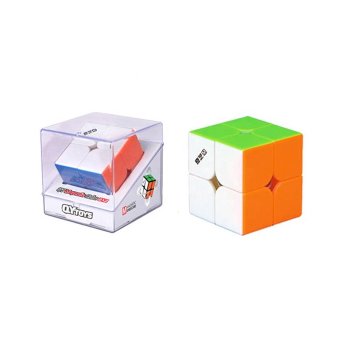

YJ MGC Magnetic 2x2 (stickerless, bright)
The QiYi MS Magnetic 2x2 is a popular choice among 2x2s. It is very smooth, and has very good corner cutting.
The QiYi MS Magnetic 2x2 is one of QiYi's best renowned 2x2s. It is the 2x2 installment of the pocket-friendly MS cube range.
Buy now at:
amazon
speedcubeshop
The Cubicle
Prices may vary depending on the retailer.
Delivery prices and delivery times may vary as well.
Back